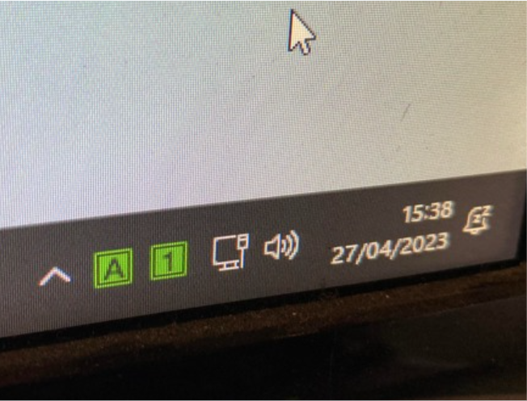
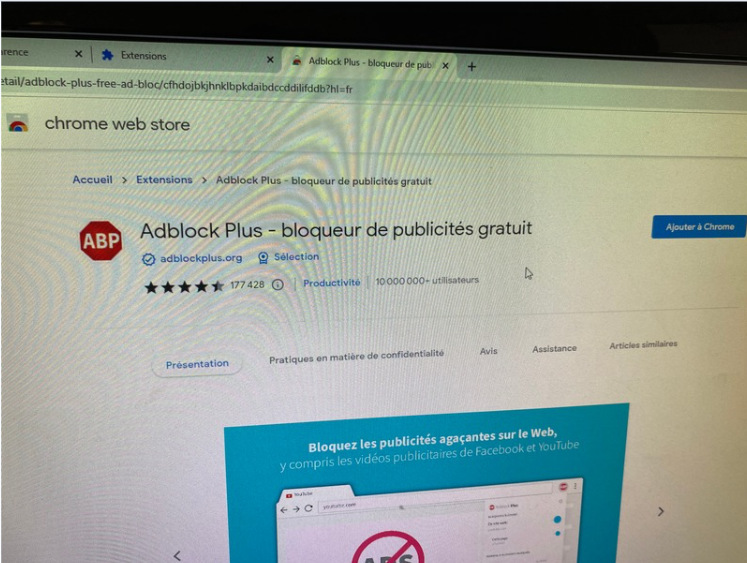
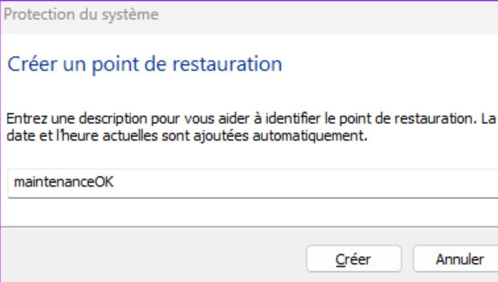
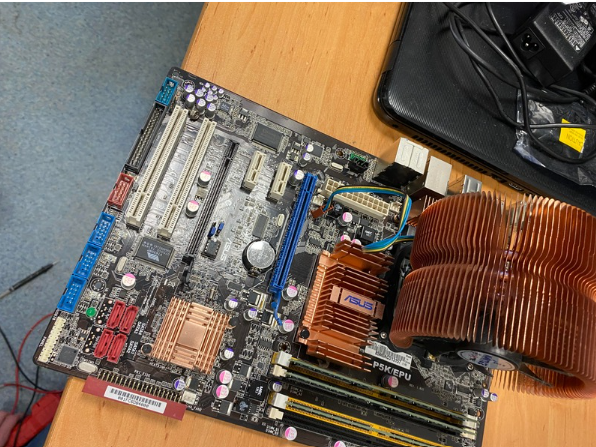
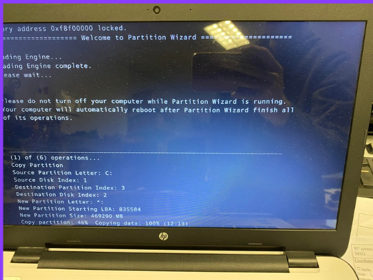
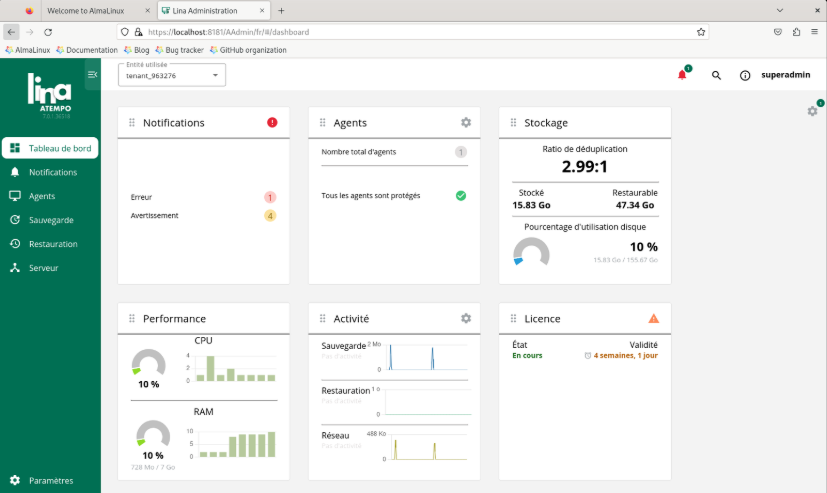
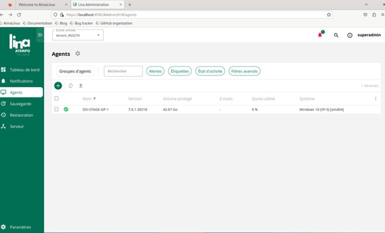
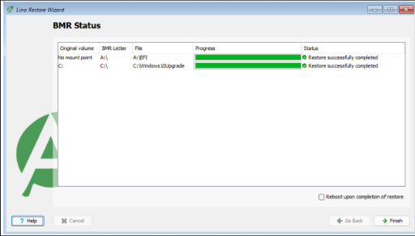

Voici le détail de mes expériences professionnelles, allant du dépannage en atelier à la gestion d'infrastructure au sein d'une Direction des Systèmes d'Information (DSI).
1. Arène Informatique - Technicien de maintenance
Période : Janvier 2023 au Février 2023
Au sein de cette entreprise spécialisée dans le dépannage et la vente de matériel informatique, j'ai pu développer mes compétences matérielles et mon contact client.
Assistance à la clientèle et diagnostic de premier niveau.
Préparation et déploiement de postes informatiques (Windows, Office, Antivirus).
Réparation matérielle (changement de disques durs, ajout de RAM, nettoyage de composants).
🛠️ Mission choisie : Préparation de PC neufs pour client
Lors de ce stage, j'ai eu l'occasion de traiter un cas particulièrement intéressant. J'ai choisi ce sujet car c'était ma principale activité et donc la plus complète. Je devais effectuer plusieurs étapes comme l'ajout d'outils d'aide au client (TrayStatus), l'installation d'un bloqueur de publicités sur les navigateurs du PC, et enfin la modification de certains réglages de Windows afin d'éviter d'éventuelles pannes.

Le TrayStatus permet de savoir si le pavé numérique est activé et si les majuscules sont activées.

L'Adblock sert tout simplement à bloquer les pubs et pop-up sur les pages web du navigateur choisi.

La création d'un point de restauration assure une reprise d'activité rapide en permettant de restaurer les paramètres système initiaux après une défaillance.
📸 Annexes : Mes interventions
Activité lors de mon stage à Arène Informatique

Démontage de PC

Clonage de disques
2. Service Informatique (DSI) - DSI de l'université
Période : 11 mars au 5 avril 2024
Ce stage au sein de la DSI m'a permis de travailler sur des problématiques d'infrastructure critiques et d'assurer le maintien en condition opérationnelle du parc informatique.
Gestion de la donnée et du stockage .
Maîtrise des environnements OS.
comprendre L'automatisation
🛠️ Mission choisie: test du logiciel de restauration ATEMPO LINA

L'interface du panneau de contrôle permet de piloter l'ensemble de la solution de sauvegarde depuis une console centrale. Elle offre une visibilité complète sur l'état de santé du serveur, les performances du stockage et les éventuelles alertes techniques. C'est l'outil que j'ai utilisé pour configurer les règles de protection et superviser le bon déroulement des sauvegardes du parc informatique.

L'agent Lina est le petit logiciel installé directement sur les postes clients pour capturer les données et les envoyer vers le serveur de sauvegarde. Il fonctionne de manière transparente et automatique, protégeant les fichiers en temps réel sans que l'utilisateur n'ait besoin d'intervenir. J'ai configuré cet agent pour assurer une protection continue (CDP) et permettre une restauration rapide des données en cas de problème.

Le BMR est une technologie qui permet de restaurer entièrement un ordinateur sur un matériel neuf ou vierge après une panne totale. Contrairement à une simple récupération de fichiers, il réinstalle automatiquement le système d'exploitation, les pilotes et les paramètres pour retrouver une machine identique à l'originale. C'est un élément clé du Plan de Reprise d'Activité que j'ai mis en place pour garantir un redémarrage rapide des serveurs.